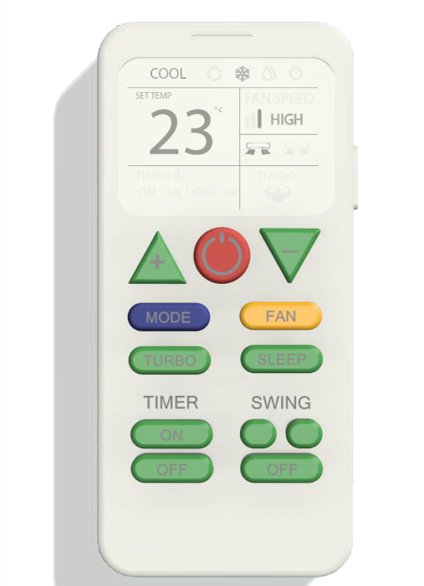
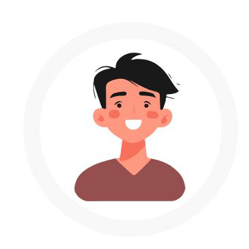

AC remotes look simple but rarely feel that way — too many buttons, too little logic. We redesigned one to make sense, then tested it on real people: a grandma, a roommate, and a sleep-deprived self all had to be able to use it.
AC Remote — Case Study, 2024. Designed by Dhvani Patel, Scarlett Dsouza & Maanvi Malsisaria.

College-age users tested the redesigned remote through real scenarios.
From changing modes to using the built-in voice assistant.
Expectancy testing, think-aloud protocol, probes, and more.
AC remotes are devices everyone uses but nobody fully understands. What should be simple — temperature, airflow, comfort — ends up feeling like a spacecraft console. Most people just press buttons until cold air comes out.
We redesigned the remote to be clean, smart, and stress-free — then tested it with real users to prove it actually works, not just for the tech-savvy.
We followed a five-stage design process, then validated the result through structured usability testing rather than assumption.
Users guessed what each button does — just by looking at it.
Real-life situations, to see how the remote gets used naturally.
Participants narrated what was going on in their head as they used it.
Follow-up questions dug deeper into choices and moments of confusion.
We watched what they did, how they reacted, and noted what they said.
Mostly college students in shared living spaces, using the AC often, and expecting quick, clear, minimal controls.

Lives with his parents and sister; uses the AC daily while studying and relaxing. Tech-savvy himself, but the remote is shared at home — it has to work for everyone, not just him.
Every core function stays — mode, temperature, fan, swing, timer, turbo, sleep, and voice control — organized around clarity instead of clutter. Try it below.
One large, central button — the first thing every participant found, no matter their age or tech comfort.
Mode changes read at a glance instead of requiring users to parse text in low light.
Temperature and fan speed stay visible on-screen, so an action never feels unconfirmed.
The two most-used controls after temperature no longer hide inside a menu.
Three participants, four real-life scenarios, one question: could someone use this remote without instructions?
Before any scenario, participants were asked to guess what each button did just by looking at it. Hover the dots on the remote for what we found.
“You're working from home and the air feels thick and humid. Walk us through what you'd do.”
“You're not stuffy anymore, but you feel very chilly. What would you do next?”
“You've moved to the sofa across the room. Make the airflow feel better from here.”
“Think twice… ummm… the swing button.”
“It's the middle of the night and you're too hot, but don't want to open your eyes to find a button.”
“I would add voice recognition.”
Power, temperature, mode-switching, and turbo were all instantly usable across every participant — validating the core layout and the decision to give the screen constant, visible feedback.
What remained was iconography and confirmation: Dry mode and swing direction need clearer symbols, quiet actions like Sleep need a one-line explanation somewhere discoverable, and every press deserves a small beep or vibration so users never have to guess whether it registered. The voice assistant validated itself as a feature people want — it just needs to be seen.